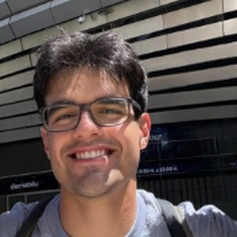

MInf · University of Edinburgh
Arian Merati
Hi! I'm Arian Merati, a fifth-year student studying for an MInf in Computer Science at the University of Edinburgh. My interests are in how large language models learn to reason, especially through on-policy distillation, and in getting them to write long, genuinely creative stories.
I'm currently a junior research assistant working with Prof. Ivan Titov and Prof. Shay Cohen on what makes on-policy distillation learn efficiently, and with Prof. Mirella Lapata on long-form story generation. Before that, I worked on automatic audio description for films with Prof. Frank Keller, thermal-camera 3D occupancy prediction with Prof. Chris Xiaoxuan Lu, and perception for autonomous vehicles with Prof. Saber Fallah at the University of Surrey.

Edinburgh, Scotland
News
- 2026.09
Started working with Ivan Titov and Shay Cohen on reasoning in LLMs and the theory of on-policy distillation.
- 2026.08
REFRAMED: Towards Realistic Audio Description Generation for Movies is out at COLM 2026. I built its ASR evaluation pipeline and aligned the multimodal training data.
- 2025.06
Joined Mirella Lapata's group to work on long-form story writing with LLMs.
- 2025.01
Started at the Edinburgh Language and Vision Group with Frank Keller, working on automatic audio description for movies.
- 2024.01
Joined the MAPS lab with Chris Xiaoxuan Lu to work on thermal-camera 3D occupancy prediction.
- 2023.06
Summer research internship at the University of Surrey's CAV lab, working on deep learning for autonomous vehicles.
Research
Questions I'm working on
- Which teacher distributions and training data let on-policy distillation learn efficiently?
- Can a theoretical framework predict when on-policy distillation works well for LLMs?
- Can self-distillation, multi-agent systems and reinforcement learning make LLM-written stories more creative?
Papers
- In preparation · ACL 2027 On-policy self-distillation for creative writing
- COLM 2026 · Acknowledged contributor REFRAMED: Towards Realistic Audio Description Generation for Movies
Experience
-
Sep 2026 – now
Junior Research Assistant
University of Edinburgh · with Ivan Titov and Shay Cohen
- Researching reasoning in LLMs and on-policy distillation.
- Investigating which teacher distributions and data cause on-policy distillation methods to learn efficiently.
- Developing a theoretical framework for when on-policy distillation works well in LLMs.
-
Jun 2025 – now
Junior Research Assistant
University of Edinburgh · with Mirella Lapata
- Improving LLMs on long-form writing tasks, with a focus on story writing.
- Lead author of a manuscript on on-policy self-distillation for creative writing, in preparation for ACL 2027.
- Exploring multi-agent systems and reinforcement learning to improve reasoning in creative writing and produce more creative stories.
-
Jan 2025 – Jun 2025
Research Intern
Edinburgh Language and Vision Group · with Frank Keller
- Built an evaluation pipeline for automatic audio description transcription, with WER evaluated on both diarization and gold-standard timestamps.
- Benchmarked automatic speech recognition systems, including WhisperX and Speechmatics.
- Aligned AudioVault audio descriptions with Condensed Movies clips to create a synchronised multimodal training set, used in REFRAMED (COLM 2026).
Timestamp Accuracy Character Name Error Rate DER WER Sentence Error Rate -
Jan 2024 – Nov 2024
Research Intern
MAPS Lab, University of Edinburgh · with Chris Xiaoxuan Lu
- Worked on thermal-camera 3D occupancy prediction, aiming to improve performance in adverse weather.
- Produced baselines by adapting RGB occupancy prediction models such as GaussianFormer to the NTU4DRadLM thermal dataset.
-
Jun 2023 – Sep 2023
Research Intern
CAV Lab, University of Surrey · with Saber Fallah
- Replaced NetVLAD's VGG-16 backbone with a Vision Transformer and pre-trained it using BYOL.
- Modified the DeCLIP framework to accept two image inputs instead of image–text pairs.
- Built a YOLOv5-based pipeline to generate heat-map images and aligned raw sensor data for autonomous vehicle perception datasets.
Education
MInf Computer Science · First Class Honours
School of Informatics, University of Edinburgh